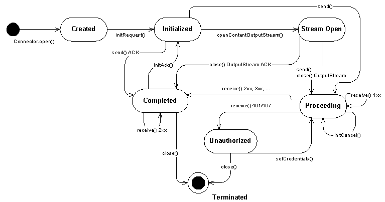

javax.microedition.sip
Interface SipClientConnection
- All Superinterfaces:
- javax.microedition.io.Connection, SipConnection
public interface SipClientConnection
- extends SipConnection
SipClientConnection represents a SIP client transaction.
Applications can create a new SipClientConnection with Connector or
SipDialog object.
The SipClientConnection has following state diagram:

- Created,
SipClientConnection created using Connector
- Initialized, request has been initialized with
initRequest(...) or
initAck() or
initCancel() or
SipDialog.getNewClientConnection(...)
- Stream Open,
OutputStream opened with
openContentOutputStream(). Opening InputStream for
received response does not trigger state transition.
- Proceeding, request has been sent, waiting for the response,
or provisional 1xx response received for an INVITE request.
initCancel() can be
called, which will spawn a new SipClientConnection
which is in Initialized state
- Completed, transaction completed with final response (2xx, 3xx, 4xx, 5xx, 6xx) in this state the ACK can be initialized. Multiple 200 OK responses can be received. Note different state transition for responses 401 and 407.
- Unauthorized, transaction completed with response 401 (Unauthorized) or 407 (Proxy Authentication Required). The application can re-originate the request with proper credentials by calling
setCredentials() method. After this the SipClientConnection is back in Proceeding state.
- Terminated, the final state, in which the SIP connection has been
terminated by error or closed
Note: The state diagram of SipClientConnection
differs from the state diagram of SIP client transaction, which can be found in
RFC 3261 [1] p.128-133
Following methods are restricted to a certain state. The table shows the
list of restricted methods allowed in each state.
- Created
- Initialized
addHeadersetHeaderremoveHeadersetRequestURIopenContentOutputStreamsendenableRefreshsetCredentials
- Stream Open
- Methods in
OutputStream and SipConnection.send
- Proceeding
receiveopenContentInputStreaminitCancel
- Completed
openContentInputStreaminitAckreceive
- Unauthorized
- Terminated
- The transaction and this connection is closed. The methods above throw
SipException.INVALID_STATE if that is specified to the
method and IOException for those methods (e.g. methods of
Input/OutputStream) that does not have SipException
specified. Methods that don't throw checked exceptions return
without any action or return null as appropriate.
Following methods can be called in every state. The functionality is defined
by the method depending on the information availability.
- Can be called in every state (with the exception of
setListener and setErrorListener). Accessors return
null in
the Terminated state.
getHeadergetHeadersgetRequestURIgetMethodgetStatusCodegetReasonPhrasegetDialogsetListener // can not be called in Terminated statesetErrorListener // can not be called in Terminated stateclose // causes state transition to Terminated state
Code examples
The example below illustrates the usage of SIP client connection: opening, sending
one request (MESSAGE) and receiving response:
public void sendTextMessage(String msg) {
SipClientConnection sc = null;
try {
sc = (SipClientConnection) Connector.open
("sip:sippy.tester@host.com:5060");
sc.initRequest("MESSAGE", null);
sc.setHeader("From", "sip:user@host.com");
sc.setHeader("Subject", "testing...");
// write message body
sc.setHeader("Content-Type", "text/plain");
sc.setHeader("Content-Length", Integer.toString(msg.length()));
OutputStream os = sc.openContentOutputStream();
os.write(msg.getBytes());
os.close(); // close stream and send the message
// wait maximum 15 seconds for response
boolean ok = sc.receive(15000);
if(ok) { // response received
if(sc.getStatusCode() == 200) {
// handle 200 OK response
} else {
// handle possible error responses
}
}
sc.close();
} catch(Exception ex) {
// handle Exceptions
}
}
Following class shows the same example using callback listener interface:
public class SipClient implements SipClientConnectionListener {
public void sendTextMessage(String msg) {
SipClientConnection sc = null;
try {
sc = (SipClientConnection) Connector.open
("sip:sippy.tester@host.com:5060");
sc.setListener(this);
sc.initRequest("MESSAGE", null);
sc.setHeader("From", "sip:user@host.com");
sc.setHeader("Subject", "testing...");
sc.setHeader("Content-Type", "text/plain");
sc.setHeader("Content-Length", Integer.toString(msg.length()));
OutputStream os = sc.openContentOutputStream();
os.write(msg.getBytes());
os.close(); // close stream and send message
} catch(Exception ex) {
// handle Exceptions
}
return;
}
public void notifyResponse(SipClientConnection scn) {
try {
// retrieve the response received
sc.receive(0); // does not block response is there
if(sc.getStatusCode() == 200) {
// handle 200 OK response
} else {
// handle possible error responses
}
sc.close();
} catch(Exception ex) {
// handle Exceptions
}
}
}
- See Also:
SipClientConnectionListener,
SipConnectionNotifier,
SipServerConnection,
SipDialog.getNewClientConnection(String)
|
Method Summary |
int |
enableRefresh(SipRefreshListener srl)
Enables the refresh for the request to be sent. |
void |
initAck()
Convenience method to initialize SipClientConnection
with SIP request method ACK. |
SipClientConnection |
initCancel()
Convenience method to initialize SipClientConnection
with SIP request method CANCEL. |
void |
initRequest(java.lang.String method,
SipConnectionNotifier scn)
Initializes SipClientConnection to a specific SIP request
method (REGISTER, INVITE, MESSAGE, REFER, ...). |
boolean |
receive(long timeout)
Receives SIP response message. |
void |
setCredentials(java.lang.String[] usernames,
java.lang.String[] passwords,
java.lang.String[] realms)
Sets multiple credential triplets for possible digest authentication. |
void |
setCredentials(java.lang.String username,
java.lang.String password,
java.lang.String realm)
Sets credentials for possible digest authentication. |
void |
setListener(SipClientConnectionListener sccl)
Sets the listener for incoming responses. |
void |
setRequestURI(java.lang.String URI)
Sets Request-URI explicitly. |
| Methods inherited from interface javax.microedition.sip.SipConnection |
addHeader, getDialog, getHeader, getHeaders, getMethod, getReasonPhrase, getRequestURI, getStatusCode, openContentInputStream, openContentOutputStream, removeHeader, send, setErrorListener, setHeader |
| Methods inherited from interface javax.microedition.io.Connection |
close |
enableRefresh
int enableRefresh(SipRefreshListener srl)
throws SipException
Enables the refresh for the request to be sent. The method
return a refresh ID, which can be used to update or stop
the refresh. Passing null as listener does not clear a
previously set listener and does not stop a refresh. Refreshing should
be stopped by calling stop. Calling enableRefresh for
the second time with a non-null value does not overwrite the previously
set listener. In this case the previously set listener remains valid,
and the method throws SipException.INVALID_STATE.
- Parameters:
srl - callback interface for refresh events, if this is null
the method returns 0 and refresh is not enabled.
- Returns:
- refresh ID. If the request is not refreshable returns 0.
- Throws:
SipException - INVALID_STATE if the
refresh can not be enabled in this state.- See Also:
SipRefreshHelper
initAck
void initAck()
throws SipException
Convenience method to initialize SipClientConnection
with SIP request method ACK. ACK can be applied only to INVITE
request. The method is available when a successful final response (2xx)
has been received.The header fields of the ACK are constructed in the same way as for any request sent
within a dialog with the exception of the CSeq and the header fields related to authentication
(RFC 3261 [1], p.82). The Request-URI and headers will be initialized automatically. After this the SipClientConnection is
in Initialized state.
At least Request-URI and following headers will be set by the method (RFC 3261 [1] 12.2.1.1 Generating the Request
p.73 and 8.1.1 Generating the Request p.35). See also RFC 3261 [1] 13.2.2.4 2xx Responses (p.82)
Request-URI // system uses the remote target and route set to
build the Request-URI
To // remote URI from the dialog state + remote tag
of the dialog ID
From // local URI from the dialog state + local tag of
the dialog ID
CSeq // the sequence number of the CSeq header field
MUST be the same as the INVITE being
acknowledged, but the CSeq method MUST be ACK.
Call-ID // Call-ID of the dialog
Via // Via header field indicates the transport used
for the transaction and identifies the location
where the response is to be sent
Route // system uses the remote target and route set
(if present) to build the Route header
Contact // SHOULD include a Contact header field in any
target refresh requests within a dialog, and
unless there is a need to change it, the URI
SHOULD be the same as used in previous
requests within the dialog
Max-Forwards // header field serves to limit the number of
hops a request can transit on the way to its
destination.
These headers will be set on behalf of the user by the implementation
the latest when sending the request. It implies that the header values
may not be available for reading right after the initAck
method returns. The user may also set (overwrite) these headers, in this
case the values set by the user take precedence over the values set by
the implementation.
The following rules also apply:
For error responses (3xx-6xx) the ACK is sent automatically by the
system in transaction level. If the user initializes an ACK which has
already been sent an Exception will be thrown.
The SipClientConnection remains in Completed state
if sending ACK fails and there is forking case. It allows trying to send
ACK again, wait for more 2xx responses or close the connection. If the
application (after investigating the error code) finds out that the
error is irrevocable, it can close the connection.
- Throws:
SipException - INVALID_STATE if the request can not be set, because of wrong state,
INVALID_OPERATION if the ACK request can not be initialized for other reason (already sent or the original request is non-INVITE).
initCancel
SipClientConnection initCancel()
throws SipException
Convenience method to initialize SipClientConnection
with SIP request method CANCEL. The method is available when a provisional response has been received.
The CANCEL request starts a new transaction,that is why the method returns a new SipClientConnection.
The CANCEL request will be built according to the original INVITE request
within this connection. The RequestURI and headers will be initialized
automatically. After this the SipClientConnection is in
Initialized state. The message is ready to be sent.
The following information will be set by the method:
Request-URI // copy from original request
To // copy from original request
From // copy from original request
CSeq // same value for the sequence number as was
present in the original request, but the
method parameter MUST be equal to "CANCEL"
Call-ID // copy from original request
Via // single value equal to the top Via header field
of the request being cancelled
Route // If the request being cancelled contains a Route
header field, the CANCEL request MUST include
that Route header field's values
Max-Forwards // header field serves to limit the number of hops
a request can transit on the way to its
destination.
These headers will be set on behalf of the user by the implementation
the latest when sending the request. It implies that the header values
may not be available for reading right after the initCancel
method returns. The user may also set (overwrite) these headers, in this
case the values set by the user take precedence over the values set by
the implementation.
Reference RFC 3261 [1] p.53-54
Note: CANCEL request SHOULD NOT be sent to cancel a request other than INVITE.
- Returns:
- A new
SipClientConnection with preinitialized CANCEL request.
- Throws:
SipException - INVALID_STATE if the request
can not be set, because of wrong state (in SipClientConnection)
or the system has already got a final response (even if not read with
receive() method). INVALID_OPERATION if CANCEL method can not
be applied to the current request method.
initRequest
void initRequest(java.lang.String method,
SipConnectionNotifier scn)
throws SipException
Initializes SipClientConnection to a specific SIP request
method (REGISTER, INVITE, MESSAGE, REFER, ...). The methods are defined in
the RFC 3261 [1] and extension specifications from SIP WG and
SIMPLE WG [2][3][4][5][6]. Methods belonging to an already established
dialog (BYE, NOTIFY, PRACK, UPDATE)
should be created using SipDialog.getNewClientConnection()
instead of this method.
The default RequestURI and headers will be initialized
automatically. After this the SipClientConnection is in Initialized state.
The initialized request can be associated with an opened SipConnectionNotifier.
Initialization of some headers depends on how the associated SipConnectionNotifier is initialized.
- Associating
SipConnectionNotifier in shared mode.
- If
SipConnectionNotifier is given as the second parameter and it is
in shared mode the headers From, Contact are set according
to the terminal SIP settings and the currently active SIP user identity.Example values:
From: "Mr. Watson" <sip:watson@worcester.bell.com>Contact: "Mr. Watson" <sip:watson@172.21.55.69:5060>
- Associating
SipConnectionNotifier in dedicated mode.
- If
SipConnectionNotifier is in dedicated mode the SIP identity
is not known by the system. Therefore the header From is preset to an
anonymous URI. The header Contact will be preset according to the
SipConnectionNotifier properties, where the
user part is set to some some default value selected by the system.Example values:
From: "Anonymous" sip:thisis@anonymous.invalidContact: sip:user@172.21.55.69:5060
- As a generic rule if the
SipConnectionNotifier is in
dedicated mode or not set at all (= null)
the user is responsible of managing the SIP identity and thus also the SIP
registration. The user SHOULD overwrite the default values of From
for all requests and Contact header for requests like INVITE,
SUBSCRIBE, REGISTER and REFER.
See also chapter "SipConnection: Opening new server connection"
for more details.
Headers that will be initialized are as follows:
To // To address constructed from SIP URI given in
Connector.open()
From // Set by the system. If SipConnectionNotifier is
given and it is in shared mode the value will
be set according the terminal SIP settings
(see Opening new server connection for more details).
If the SipConnectionNotifier is not given
(= null) or it is in dedicated mode the From
header MUST be set to a default value
e.g. anonymous URI (see RFC 3261 [1],
chapter 8.1.1.3 From).
CSeq // Set by the system
Call-ID // Set by the system
Max-Forwards // Set by the system
Via // Set by the system
Contact // If SipConnectionNotifier is given the value is
set by the system for REGISTER, INVITE,
SUBSCRIBE and REFER. The value will be set
according to the terminal IP settings and the
SipConnectionNotifier properties. So the new
request is associated with the
SipConnectionNotifier. If the associated
SipConnectionNotifier is in the dedicated mode
the user part is set to some default value
e.g. user.
Example (dedicated mode),
Contact: sip:user@172.21.55.69:5060
Example (shared mode),
Contact: "Mr X" <sip:mrx@172.21.55.69:5060>
These headers will be set on behalf of the user by the implementation
the latest when sending the request. It implies that the header values
may not be available for reading right after the initRequest
method returns. The user may also set (overwrite) these headers, in this
case the values set by the user take precedence over the values set by
the implementation.
If the application is using shared connections then it must set the
Accept-Contact header to all outgoing request except CANCEL and ACK. For
more details on how the message routing is handled based on the
Accept-Contact header see
"SipConnection: SIP Identity" and
"SipConnection: Routing the incoming request".
Reference RFC 3261 [1] p.35 (8.1.1 Generating the Request) and p.159 (20 Header Fields)
- Parameters:
method - Name of the methodscn - SipConnectionNotifier to which the request will be associated. If scn is null
the request will not be associated to any user defined listening point.
- Throws:
java.lang.NullPointerException - if method is null
java.lang.IllegalArgumentException - if the method is invalid
SipException - INVALID_STATE if the request can not be set, because of wrong state in
SipClientConnection.Furthermore, ACK and CANCEL methods can not be initialized in Created state.
SipException - INVALID_OPERATION if the method argument is one of {BYE, NOTIFY, PRACK, UPDATE}.- See Also:
SipConnectionNotifier
receive
boolean receive(long timeout)
throws SipException,
java.io.IOException
Receives SIP response message. The receive method will update the
SipClientConnection with the last new received response.
The implementation places the responses in a FIFO queue and when this
method is called it fetches the
least recently arrived response which has not been fetched already.
If no message is received the method will block until something
is received or the specified amount of time has elapsed.
The SipClientConnection is always associated with the latest
response received successfully by calling the receive() method.
100 (Trying) responses for Non-INVITE transactions are not passed
up to the application level in receive() as these responses are
not explicitly required/expected by RFC 3261 and they are only useful
information for the transaction layer which takes care of request resends.
- Parameters:
timeout - the maximum time to wait in milliseconds. 0 = do not
wait, just poll
- Returns:
- Returns
true if response was received. Returns
false if the given timeout elapsed and no response was received.
- Throws:
java.io.IOException - if the message could not be received
or because of network failure. When an IOException is thrown
the connection moves to Terminated state. This exception is
thrown regardless of there is a SipErrorListener set
or not for the connection.
SipException - INVALID_STATE if the receive can not
be called because of wrong state.- See Also:
SipConnection.send()
setCredentials
void setCredentials(java.lang.String[] usernames,
java.lang.String[] passwords,
java.lang.String[] realms)
throws SipException
Sets multiple credential triplets for possible digest authentication.
The username and password are specified for certain protection domain,
which is defined by the realm parameter. The parameters of this method
are 3 parallel arrays where usernames[i] and passwords[i] are
interpreted as belonging to the protection domain in realms[i].
The credentials can be set:
- before sending the original request in Initialized state. The
API implementation caches the credentials for later use.
The sequence is similar to what is shown in
Example 1.
- when 401 (Unauthorized) or 407 (Proxy Authentication Required)
response is received in the Unauthorized state. The API
implementation uses the given credentials to re-originate the request
with proper authorization header. After that the
SipClientConnection will be in Proceeding state.
The sequence is similar to Example 2.
Implementations of this specification must support setting the
credentials in both states described above.
See also SipClientConnection
state diagram.
See Authentication
requirements for the authentication methods supported.
This method was added to the API in version 1.1.0. This is necessary in
the forking case when the received 401/407 error response may contain
multiple authentication headers. For this case proper reauthentication
was not possible in the Unauthorized state using the other form
of this method which allows setting only a single triplet at a time.
When setting the credentials in the Unautorized state the
request is automatically resent which implies that the application is
unable to further modify the request headers before sending. Calling
getHeader immediately after setCredentials returns the
value of the authentication headers as they were set by the user before
sending the original request. The updated value of the authentication headers set by
the API implementation are not available at this point and can be
examined after a response is received to the reoriginated request.
- Parameters:
usernames - array of user names. The array element username[i]
is for the protection domain realm[i].passwords - array of user passwords. The array element
passwords[i] is for the protection domain realm[i].realms - array of protection domains
- Throws:
java.lang.NullPointerException - if the usernames, passwords or
realms array is null or any of their elements is null
java.lang.IllegalArgumentException - if the length of the parameter arrays are
not equal or the length of at least one of them is 0.
SipException - INVALID_STATE if the credentials can not
be set in this state.- Since:
- 1.1.0
setCredentials
void setCredentials(java.lang.String username,
java.lang.String password,
java.lang.String realm)
throws SipException
Sets credentials for possible digest authentication.
The username and password are specified for certain protection domain,
which is defined by the realm parameter.
The credentials can be set:
- before sending the original request in Initialized state.
The API implementation caches the credentials for later use.
See Example 1
- when 401 (Unauthorized) or 407 (Proxy Authentication Required)
response is received in the Unauthorized state. The API
implementation uses the given credentials to re-originate the request
with proper authorization header. After that the
SipClientConnection will be in Proceeding state.
See Example 2
Implementations of this specification must support setting the
credentials in both states described above.
See also SipClientConnection
state diagram.
See Authentication
requirements for the authentication methods supported. *
The application can set multiple credential triplets
(username, password, realm) for one SipClientConnection in the
Initialized state, however it can not set mulitple triplets in
the Unauthorized state using this method, as in this case the
request would be automatically resent after the first execution of this
method. For setting multiple credentials in the Unauthorized
state the application should use the SetCredentials(String[], String[],
String[]) method.
When setting the credentials in the Unautorized state the
request is automatically resent which implies that the application is
unable to further modify the request headers before sending. Calling
getHeader immediately after setCredentials returns the
value of the authentication headers as they were set by the user before
sending the
original request. The updated value of the authentication headers set by
the API implementation are not available at this point and can be
examined after a response is received to the reoriginated request.
Example 1
The following simplified example shows how the credentials are set before sending the
original request.
- Initialize the original REGISTER request.
- Set credentials username, password for some realm.
The credentials are saved by the system.
- Application calls
send()
- The API implementation sends REGISTER request to the SIP server.
- Application calls
receive() to wait for the next response.
- SIP server responds with the "401 Unauthorized". The response is not
passed up to the application, since the API implementation either prompts for the
credentials (ask them with a dialog) or uses the previously saved credentials
set by the application.
- The API implementation calculates the authorization headers and resends
the REGISTER.
- Now the server accepts the REGISTER and responds with 200 OK. The response
is passed to the application.
- The
receive() returns and the application calls getStatusCode(),
which returns 200.
- Application ends the connection by calling
close().

Example 2
The following example shows how the credentials are set when the authentication
response is received by the application.
- The application initializes the original REGISTER request.
- Application calls
send()
- The API implementation sends REGISTER request to the SIP server.
- Application calls
receive() to wait for the next response.
- SIP server responds with the "401 Unauthorized". The response is passed up
to the application, since the API implementation does not have the credentials
or it is not able to collect them from the user.
- The application calls
getStatusCode(), which returns now 401.
- The application gathers the credentials and calls
setCredentials().
- The API implementation calculates the authorization headers and resends
the REGISTER.
- Application calls
receive() to wait for the next response.
- The server accepts the REGISTER and responds with 200 OK. The response
is passed to the application.
- The
receive() returns and the application calls getStatusCode(),
which returns now 200.
- Application ends the connection by calling
close().

The following example code shows an outline how the application
could send the REGISTER and handle the authentication responses as
shown in the Example 2.
public void doRegister(String username, String password, String realm) {
SipClientConnection scc = null;
SipConnectionNotifier scn = null;
String contact = null;
try {
// open listener in application specific port 5080
scn = (SipConnectionNotifier) Connector.open("sip:5080");
// build the contact URI
contact = new String("sip:user@"+scn.getLocalAddress()+
":"+scn.getLocalPort());
// open client connection to the SIP registrar
// in this case "host.com"
scc = (SipClientConnection) Connector.open("sip:host.com");
// initialize REGISTER with appropriate headers
scc.initRequest("REGISTER", scn);
scc.setHeader("From", "sip:user@host.com");
scc.setHeader("To", "sip:user@host.com");
scc.setHeader("Contact", contact);
scc.send();
boolean handled = false;
int scode = 0;
while(!handled) {
SipHeader sh;
// wait max 30 secs for response
scc.receive(30000);
scode = scc.getStatusCode();
switch(scode)
{
case 401:
sh = new SipHeader("WWW-Authenticate",
scc.getHeader("WWW-Authenticate"));
realm = sh.getParameter("realm");
// strip the quotation marks
realm = realm.substring(1, realm.length()-1);
// here for example, prompt user for password
// for this realm
// set credentials to initiate re-REGISTER
scc.setCredentials(username, password, realm);
break;
case 407:
sh = new SipHeader("Proxy-Authenticate",
scc.getHeader("Proxy-Authenticate"));
realm = sh.getParameter("realm");
// strip the quotation marks
realm = realm.substring(1, realm.length()-1);
// here for example, prompt user for password
// for this realm
// set credentials to initiate re-REGISTER
scc.setCredentials(username, password, realm);
break;
case 200:
// handle OK response
handled = true;
break;
default:
// handle other responses
handled = true;
}
}
scc.close();
} catch(Exception ex) {
// handle Exceptions
}
}
- Parameters:
username - username (for this protection domain)password - user password (for this protection domain)realm - defines the protection domain
- Throws:
java.lang.NullPointerException - if the username, password or
realm is null
SipException - INVALID_STATE if the credentials can not
be set in this state.
setListener
void setListener(SipClientConnectionListener sccl)
throws java.io.IOException
Sets the listener for incoming responses. If a listener is already set
it will be overwritten. Setting listener to null will remove
the current listener.
- Parameters:
sccl - reference to the listener object. Value null will
remove the existing listener.
- Throws:
java.io.IOException - if the connection is closed
setRequestURI
void setRequestURI(java.lang.String URI)
throws SipException
Sets Request-URI explicitly. If this operation is supported, Request-URI
can be set only in Initialized state. Empty or null argument removes Request-URI if set previously.
It is not mandated that this operation be supported, an implementation
may throw SipException.INVALID_OPERATION in any state.
- Parameters:
URI - Request-URI
- Throws:
java.lang.IllegalArgumentException - MAY be thrown if the URI is invalid
SipException - INVALID_STATE if the Request-URI can not be set, because of wrong state,
INVALID_OPERATION if the Request-URI is not allowed to be set.
Copyright © 2002-2010 Nokia. All Rights Reserved.